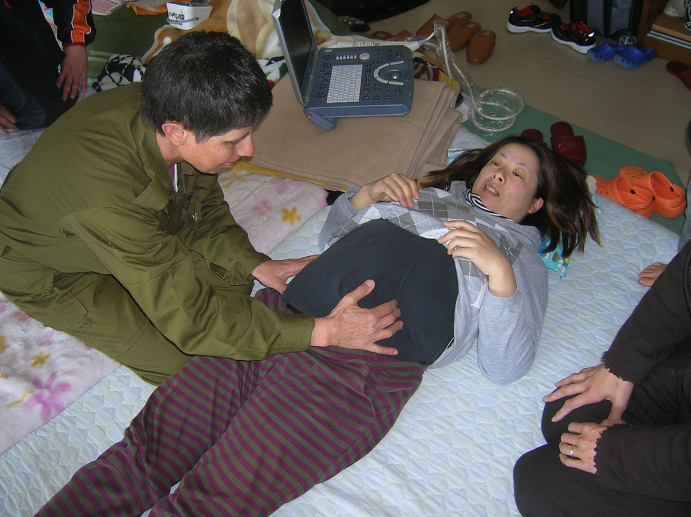

A porta da sequência obstétrica — e o que ela não cobre
Com atraso menstrual, seios doloridos, enjoo e útero amolecido — o que ainda falta para dizer, com a palavra certa, que ela está grávida?
ObstetríciaParte A · Porta de entradaItens 001–008Pergunta central
Tópico 1
Sequência de três degraus da obstetrícia básica
O diagnóstico de gravidez abre a sequência obstétrica básica: diagnóstico → modificações do organismo materno → assistência pré-natal. Sem o primeiro, o restante vira protocolo solto. Com o primeiro bem feito, o raciocínio clínico ganha um ponto de partida: há gravidez? em qual degrau de certeza? em qual semana do relógio?
O risco não mora em dificuldade abstrata — mora em errar o degrau (presunção × probabilidade × certeza) e em errar o relógio (semana do achado). A apostila trabalha com caso único — uma paciente, várias perguntas — para forçar classificação e cronologia no mesmo fio.
Tópico 2
Pré-natal como básico (e o que NÃO se desenvolve aqui)
Pré-natal é básico dos básicos em obstetrícia — e também cai em medicina de família, atenção básica e, em algumas bancas, medicina preventiva. Há questões cobrando suplementos (o que deve / o que não deve), com diferença entre Ministério da Saúde e outras sociedades. Vacinas no pré-natal têm atualização; exames também mudam com frequência.
O desenvolvimento operacional de suplementos, vacinas, calendário de exames e divergências MS × sociedades não é desta plataforma. Aqui só se ancora que isso existe, cai em prova e terá dono próprio adiante. Não reensinar checklist de pré-natal — abriria porta para fisiologia adaptativa, suplementação, calendário vacinal, e roubaria o eixo desta aula, que é classificar o achado.
Tópico 3
O risco real: errar o degrau e o relógio
O conteúdo de diagnóstico não é “difícil” por densidade abstrata. O risco é errar o degrau (presunção × probabilidade × certeza) e errar o relógio (semana do achado). Volume de queixas não vira certeza: contagem não muda o tipo do sinal. E uma mama cheia de epônimos ainda é presunção, não probabilidade, até que o ninho (útero–vagina–vulva) entre em campo.
A cronologia cobra mais do que se imagina: o 1.000 mUI/mL do beta-hCG é leitura de prova que muda de rótulo (saco no US, não nascimento da gravidez), e a margem de 5–7 dias do CCN decide se a DUM ainda manda. Esses pontos viram CAIXAS-NUANÇA no corpo do texto — não para frear, mas para fixar o eixo da nuance.
Tópico 4
Fronteiras: base A12–A13 e dívida conjugatas aberta
Anatomia da pelve já é base construída. Útero, colo, vagina e vulva entram aqui apenas como sinais de gravidez, nunca como atlas de osso, assoalho, vasos ou ureter. (A12–A13 cobrem parede, assoalho, mobília, vasos e nervos — a dívida ali, conjugatas e estreitos, ainda está aberta.)
Conjugatas, estreitos, pelvimetria e miolo obstétrico da pelve: zero menções na fonte deste tema. Esta plataforma não paga a dívida truncada da anatomia óssea. Quem vier aqui procurando fechar conjugatas vai sair de mãos vazias — e isso é deliberado, porque pagar a dívida com material fora da fonte configuraria fraude de cobertura.
Três degraus da obstetrícia básicaTrilha horizontal — você está no primeiro nó; o segundo e o terceiro têm dono próprio e ficam como ponte, não como conteúdo.Esquema autoral · SVG-piso (S1)

Consulta pré-natal: cenário de porta de entrada
A obstetrícia começa antes do pré-natal: a primeira cena é o exame que classifica o achado no degrau certo. O caso desta plataforma nasce nesse ponto.
Doctors Examining Pregnant Woman. Photo: Israel Defense Forces Spokesperson's Unit, 2011. Licensed under CC BY 2.0. Source: https://commons.wikimedia.org/wiki/File:Flickr_-_Israel_Defense_Forces_-_Doctors_Examining_Pregnant_Woman.jpg
Quiz — fixação
O que esta plataforma funda e o que ela cede?
Gabarito B.A sequência é diagnóstico → modificações → pré-natal; aqui só o primeiro se desenvolve.
(A)inverte: suplementos e vacinas são A16, e a tríade é exatamente o que se funda aqui.
(C)conjugatas não aparecem na fonte (0 hits) — a dívida permanece aberta.
(D)US é parte do eixo de certeza/datação, mas clínica e lab também são fundados.
Por que cair na A/C:(A) seduz quem associa “obstetrícia = pré-natal” (pré-natal = A16); (C) seduz quem ainda espera pagar a dívida óssea da anatomia aqui — não é esta aula.
Conjugatas e estreitos nesta plataforma:
Gabarito B.Contagem literal na fonte = 0; não fabricar pagamento — o card Dívida A12 é a única coisa honesta sobre o tema.
(A)viola o contrato de base — anatomia está sedimentada, não se reabre.
(C)CCN data no 1º trimestre — outro eixo, não substituto de pelvimetria.
(D)mistura limiar de saco com pelvimetria, que é outro campo.
Por que cair na A:hábito de “completar a pelve” em todo tema obstétrico — o costume é armadilha, não fundamento.